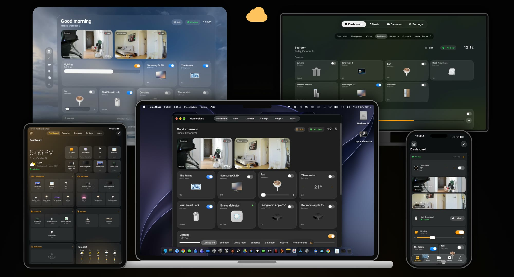
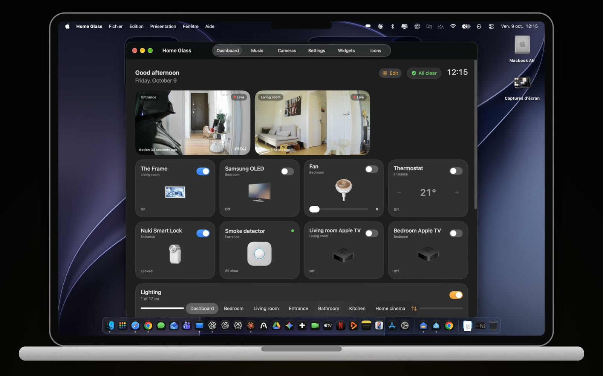
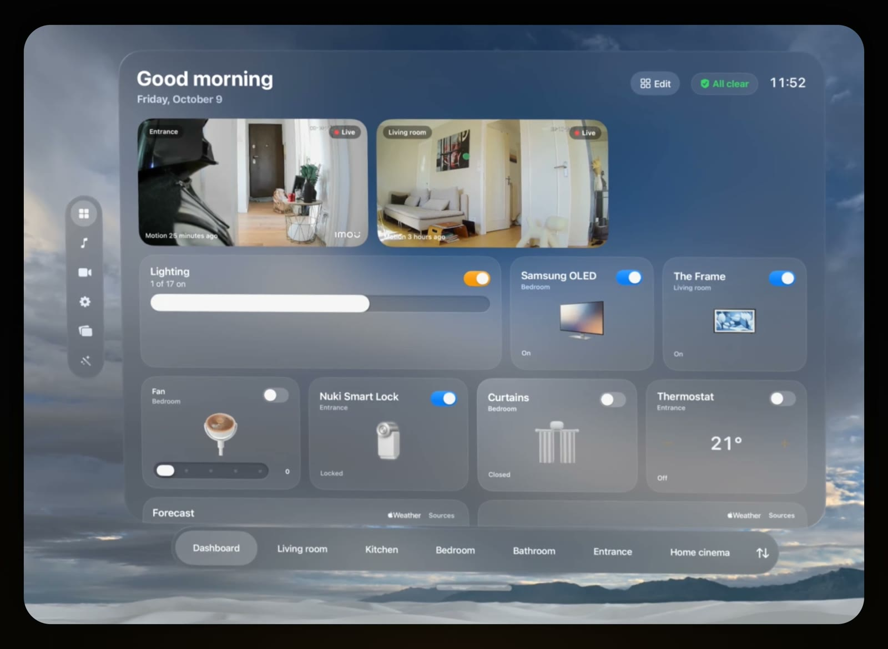
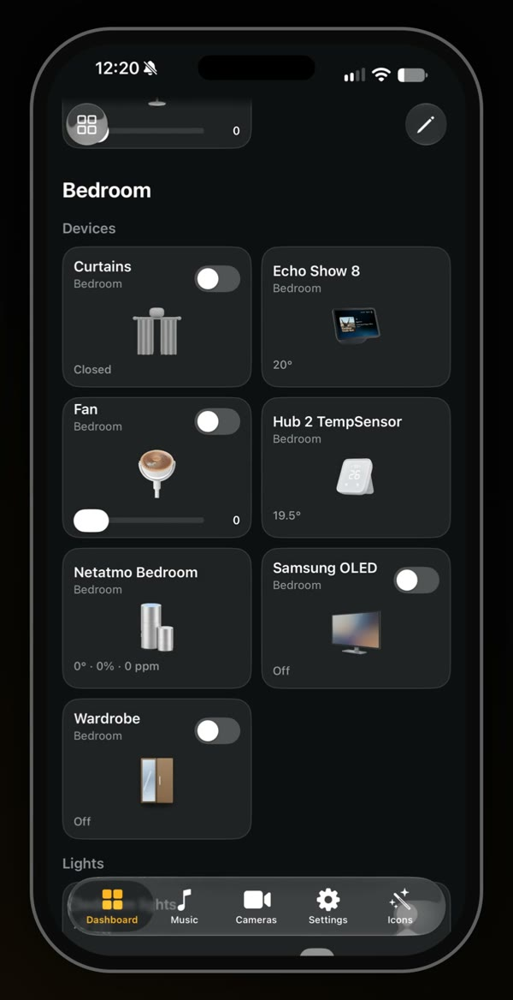
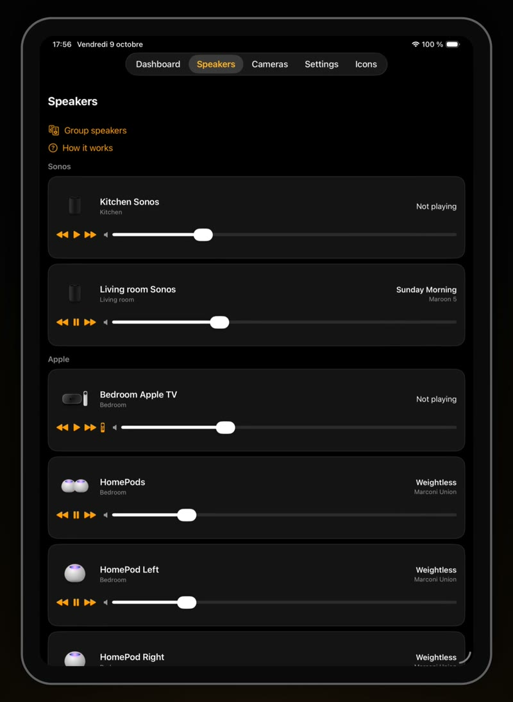
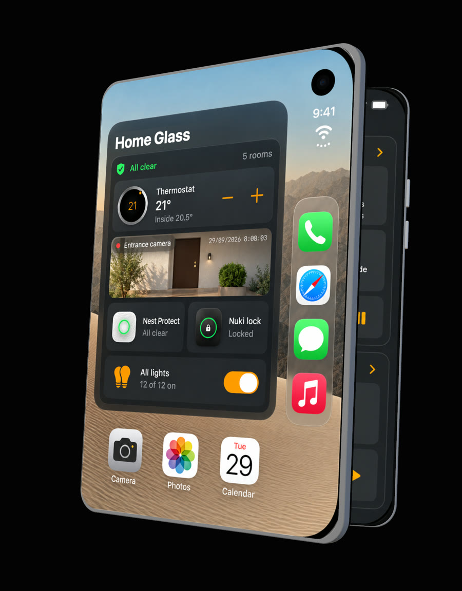
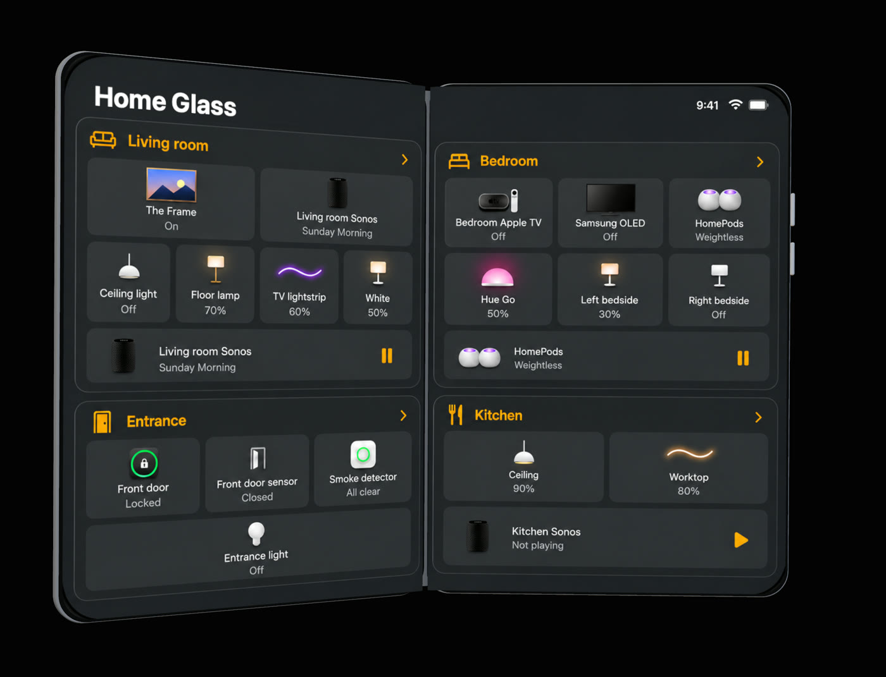
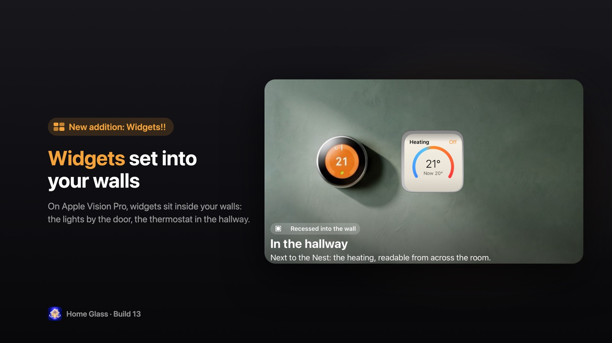
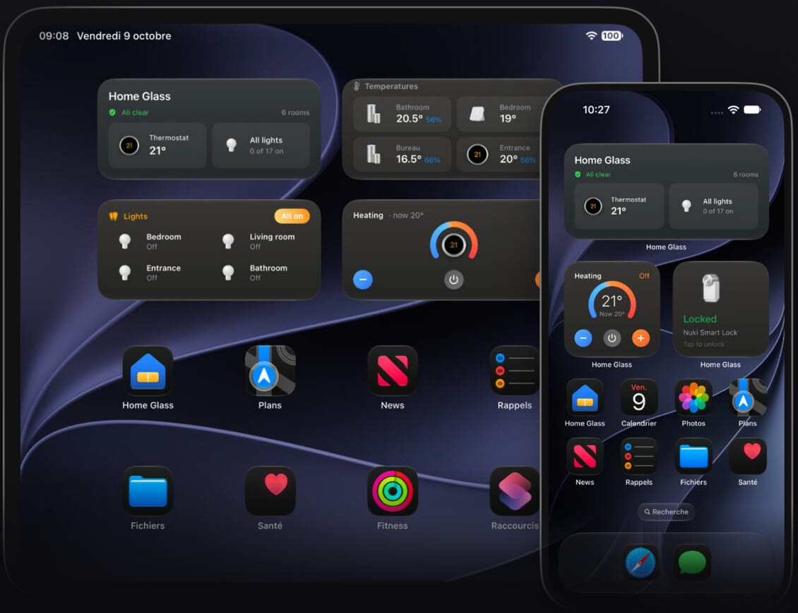
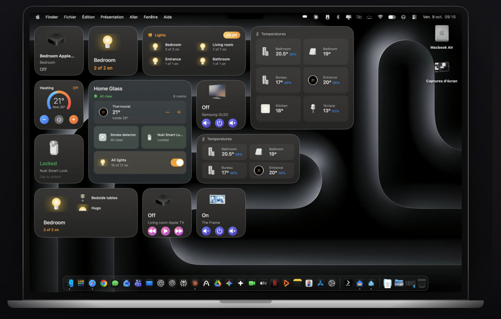

Your whole home,
in one app.
Lights, cameras, climate, TVs, speakers, locks and appliances, from every brand, together on Apple Vision Pro, iPhone, iPad, Mac and Apple TV.

One app on every Apple screen
The same home everywhere, made for each device. Your rooms, names, icons and groups follow you through iCloud.
Mac

Apple Vision Pro

iPhone and iPad


Ready for iPhone Duo
Closed, the essentials on the cover screen. Open, every room across both screens.


And widgets, everywhere
Set into your walls on Apple Vision Pro, on the Home Screen of your iPhone and iPad, and on your Mac desktop.



Your home at a glance
Cameras, climate with the forecast, all your lights, TVs, weather and your devices' batteries, then every room.
Speakers
Sonos, HomePod, Apple TV and Echo: what's playing, play and pause, volume, and Sonos groups.
Icon Studio
About 1,000 real products drawn in one style, recognised automatically from your devices' names and models.
Made yours
Reorder tiles and sections, move a device to another room, rename anything, hide what you never use, group lights.
Works with what you already have
Home Glass talks to your devices directly from your iPhone, iPad, Mac or Vision Pro. A device that reaches it two ways appears only once.
Coming in the next update:
Help
Step-by-step guides for every connection are in the app: Settings › Help & Support. The questions people ask most:
Apple Home or Home Assistant: which should I use?
Apple Home is the easiest: everything already in Apple's Home app works right away, Matter devices included, with nothing to keep running. Home Assistant is best if you already run it on a server that's always on: the most devices, live cameras and every detail. You can use both: duplicates are merged.
How do I connect Home Assistant?
In Settings › Connections › Home Assistant, open the connection guide. Home Glass finds your server on your network. In Home Assistant, click your name, open the Security tab, create a long-lived access token, and paste it in Home Glass. The token stays in your device's Keychain. On Apple TV, send the connection from your iPhone instead of typing it with the remote.
Can I try it without a smart home?
Yes. On the welcome screen, choose "Try the demo": a complete home with lights, TVs, speakers, cameras, a thermostat and a lock.
How do I add widgets?
On iPhone and iPad, touch and hold the Home Screen, tap Edit, then Add Widget, and choose Home Glass. On Mac, right-click the desktop and choose Edit Widgets. On Apple Vision Pro, look at a wall, open the Widgets app, choose a Home Glass widget and place it. In Settings, Home Glass shows every step.
What's free, and what does Pro include?
Free: your Home page with everything at a glance, your first 2 rooms (you choose which), 2 speakers and 2 wall widgets to try. Pro, one purchase with no subscription that unlocks every platform: every room and speaker, every widget, live cameras, and illustrations of your exact devices. You can restore it from Settings.
A device is missing or shown wrong.
Write to us with its brand and model, and how it reaches Home Glass (Apple Home, Home Assistant…). Settings › Support › Contact the developer fills in your version and device for you.
Support
Questions, bugs or ideas? I read every message and answer within two days.
charlesmillet@me.com